Modelação e Simulação - Laboratório 1
Carlos Silva - 81323
Ricardo Espadinha - 84178
Grupo 33 - Segunda-feira, 10:00h LSDC1
2018/2019 - 2º Semestre
Contents
Parte 1 - Simulção do movimento livre de uma viatura
%Reset do ambiente de trabalho clear; close all; %Condições iniciais (vectores representam conjuntos de valores para diferentes simulações) %Massa do veículo [Kg] m = 30; %Coeficiente de atrito [Nm/s] B = [5, 5, 3, 3, 20, 20]; %Velocidade inicial [m/s] v0 = [3, -3, 3, -3, 3, -3]; %Posição inicial [m] y0 = 5; %Tempo total da simulação [s] ttotal = 40; %Simulação do modelo sim("car"); %Plots plot(t,v); grid on; title("Velocidade do veículo"); xlabel("Tempo [s]"); ylabel("Velocidade [ms^{-1}]"); legend(sprintf("v_0 = %d\n^{m}/_{\\beta}=%.1f", v0(1), m/B(1)), ... sprintf("v_0 = %d\n^{m}/_{\\beta}=%.1f", v0(2), m/B(2)), ... sprintf("v_0 = %d\n^{m}/_{\\beta}=%.1f", v0(3), m/B(3)), ... sprintf("v_0 = %d\n^{m}/_{\\beta}=%.1f", v0(4), m/B(4)), ... sprintf("v_0 = %d\n^{m}/_{\\beta}=%.1f", v0(5), m/B(5)), ... sprintf("v_0 = %d\n^{m}/_{\\beta}=%.1f", v0(6), m/B(6)), ... "Location", "eastoutside" ... ); figure plot(t, y); grid on; title("Posição do veículo"); xlabel("Tempo [s]"); ylabel("Posição [m]"); legend(sprintf("v_0 = %d\n^{m}/_{\\beta}=%.1f", v0(1), m/B(1)), ... sprintf("v_0 = %d\n^{m}/_{\\beta}=%.1f", v0(2), m/B(2)), ... sprintf("v_0 = %d\n^{m}/_{\\beta}=%.1f", v0(3), m/B(3)), ... sprintf("v_0 = %d\n^{m}/_{\\beta}=%.1f", v0(4), m/B(4)), ... sprintf("v_0 = %d\n^{m}/_{\\beta}=%.1f", v0(5), m/B(5)), ... sprintf("v_0 = %d\n^{m}/_{\\beta}=%.1f", v0(6), m/B(6)), ... "Location", "eastoutside" ... );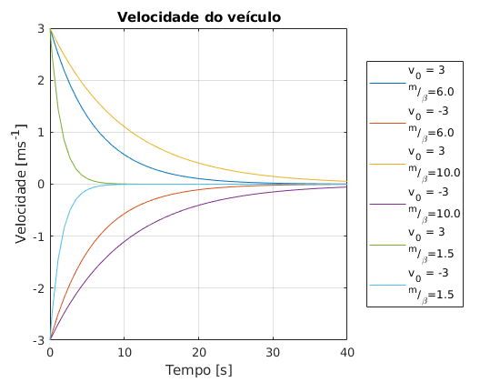 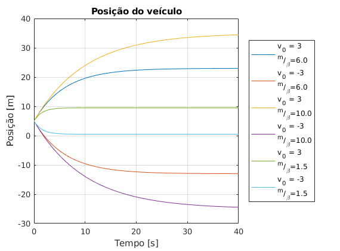
Comentários: Observa-se que quando a constante de tempo é maior (menor atrito), o veículo percorre uma maior distância demorando mais tempo a atingir velocidade zero. Verifica-se então que os valores da simulação vão de encontro ao teóricamente esperado.
Parte 2 - Modelo predador-presa
Exercício 2.2
%Reset do ambiente de trabalho clear; close all; %Condições iniciais %Impacto que o nível de uma das populações tem na taxa de natalidade ou mortalidade da outra a1 = 1; a2 = 1; %Populações iniciais N1 = 20; N2 = 10; %Tempos totais das simulações ttotal_sim = [ 20, 2, 1, 1, 4 ]; %Diferença entre a taxa de natalidade e mortalidade (cada posição do vector contém o valor para uma simulação diferente) d1_sim = [ N2, 9, 3, -3, -2 ]; d2_sim = [-N1, -18, 5, 5, -15 ]; %Título para o plot de cada simulação titles_sim = {"Ponto de Equílibrio", "Oscilação", "Extinção Presas/Crescimento Predadores (1)", "Extinção Presas/Crescimento Predadores (2)", "Extinção de ambas as populações"}; for n = 1:length(ttotal_sim) figure; ttotal = ttotal_sim(n); d1 = d1_sim(n); d2 = d2_sim(n); sim("population"); plot(tout, N1out); grid on; hold on; plot(tout, N2out); title(titles_sim(n)); xlabel("Tempo"); ylabel("População"); legend( sprintf('Presas\n\\delta_1=%d', d1), ... sprintf('Predadores\n\\delta_2=%d', d2), ... "Location", "eastoutside" ... ); end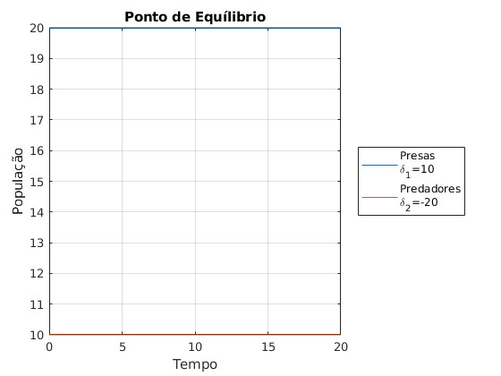 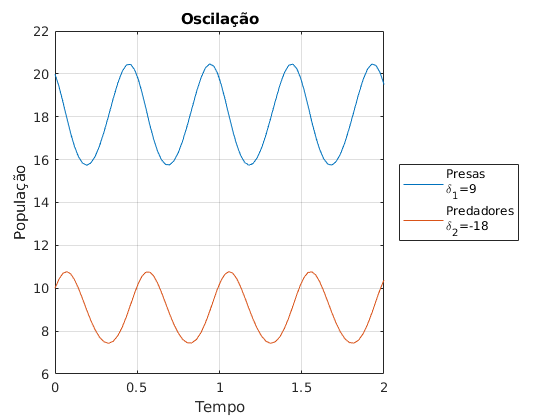 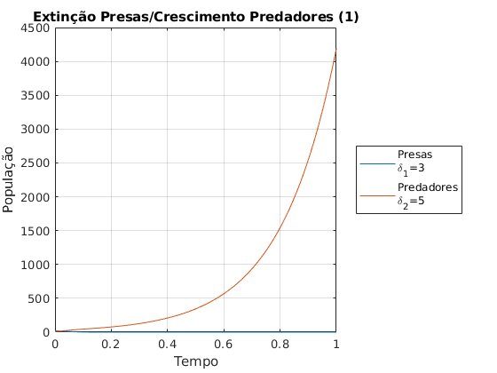 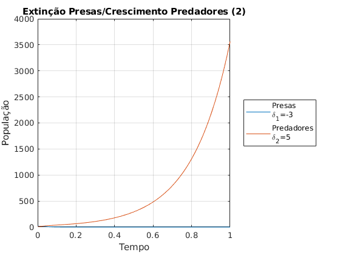 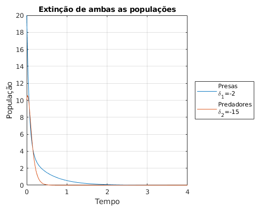
Comentários:
Observa-se que quando:
- 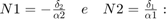 Equílibrio das populações (Gráfico 1)
- 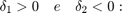 Condição oscilatória (Gráfico 2)
- 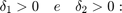 Condição de crescimento infinito de predadores e extinção de presas. (Gráfico 3)
- 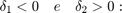 Condição de crescimento infinito de predadores e extinção de presas. (Gráfico 4)
- 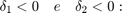 Condição de extinção de ambas as populações. (Gráfico 5)
Verifica-se então que os valores da simulação vão de encontro ao teóricamente esperado.
Exercício 2.3
%Reset do ambiente de trabalho clear; close all; %Condições iniciais a1 = 1; a2 = 1; d1 = 5; d2 = -5; %Tempo de simulação ttotal = 10; %Populações a simular N1_sim = [3 10 20 40]; N2_sim = [3 15 18 30]; figure; for n = 1:length(N1_sim) N1 = N1_sim(n); N2 = N2_sim(n); sim("population"); plot(N1out, N2out, "DisplayName", sprintf('N_1=%d | N_2=%d', N1, N2)); if n == 1 hold on; grid on; end end plot(d1, -d2, 'ro', "DisplayName", "Ponto de Equílibrio"); title("Soluções oscilatórias no espaço de fase"); xlabel("N_1 - Presas"); ylabel("N_2 - Predadores"); legend(); N1_sim = [15, 30]; N2_sim = [30, 15]; phase_sp = figure; time_sp = figure; for n = 1:length(N1_sim) N1 = N1_sim(n); N2 = N2_sim(n); sim("population"); figure(phase_sp); plot(N1out, N2out, "LineWidth", 2/n, "DisplayName", sprintf('N_1=%d | N_2=%d', N1, N2)); if n == 1 hold on; grid on; end figure(time_sp); plot(tout, N1out, "DisplayName", sprintf('Presas \n N_1=%d | N_2=%d', N1, N2)); if n == 1 hold on; grid on; end plot(tout, N2out, "DisplayName", sprintf('Predadores \n N_1=%d | N_2=%d', N1, N2)); end figure(phase_sp); title("Soluções temporalmente deslocadas no espaço de fase"); xlabel("N_1 - Presas"); ylabel("N_2 - Predadores"); legend(); figure(time_sp); title("Evolução temporal das populações"); xlabel("Tempo"); ylabel("Populações"); legend("Location", "eastoutside"); xlim([1 3.5])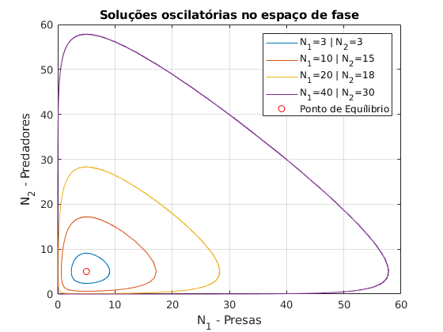 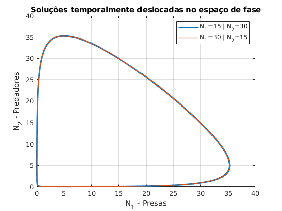 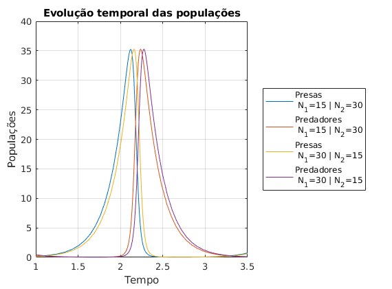
Comentários: Verifica-se que o ponto de equílibrio coincide com o "centro" das curvas, estando assinalado no Gráfico 1 e indo de encontro às expressões teoricamente calculadas. Obtêm-se curvas fechadas para os valores simulados, o que implica que o sistema é oscilatório tal como previsto teóricamente e confirmado nas alíneas anteriores. As curvas apresentam uma diferença de diametro que demonstra diferentes amplitudes de oscilação consoante a abundância populacional inicial. Também se observa que existem condições iniciais que levam a mesma resposta oscilatória, a menos de um deslocamento temporal, que se tratam das situações em que os valores populacionais se encontram trocados entre si. Isto é confirmado no Gráfico 2 e 3 que demonstram respectivamente que a curva de espaços de fase é a mesma e que a evolução temporal difere apenas por um deslocamento temporal.
Exercício 2.4 - a)
%Reset do ambiente de trabalho clear; close all; load("presas.mat"); %Condições conhecidas N1 = 4; d1 = 3.1; a1 = 1.4; d2 = -1.5; %Valores tentativa para as condições desconhecidas de maneira a aproximar aos obtidos pela observação N2_sim = [2 2 2 1.8 1.7 1.6]; a2_sim = [2 1.5 0.9 0.9 0.7 0.7]; for n = 1:length(N2_sim) figure; N2 = N2_sim(n); a2 = a2_sim(n); sim("population", tr); plot(tr, yr, "--"); hold on; grid on; plot(tr, N1out); plot(tr, N2out); title(sprintf('Evolução temporal das populações para N_2=%.1f e \\alpha_2=%.1f', N2, a2)); xlabel("Tempo"); ylabel("Populações"); legend('Observação Presas', 'Calculado Presas', 'Calculado Predadores'); end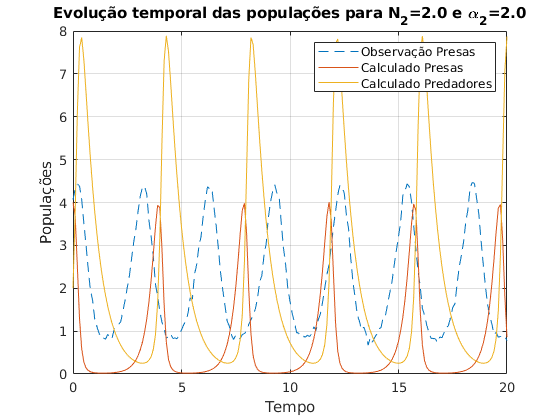 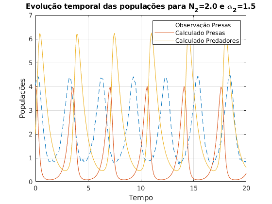 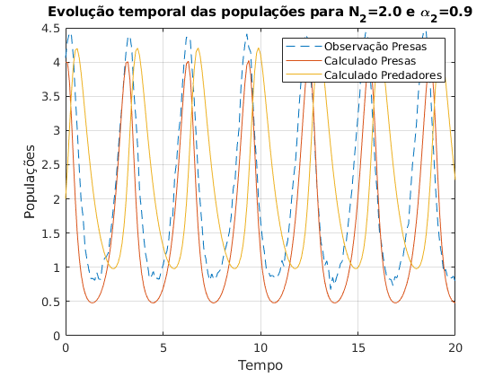 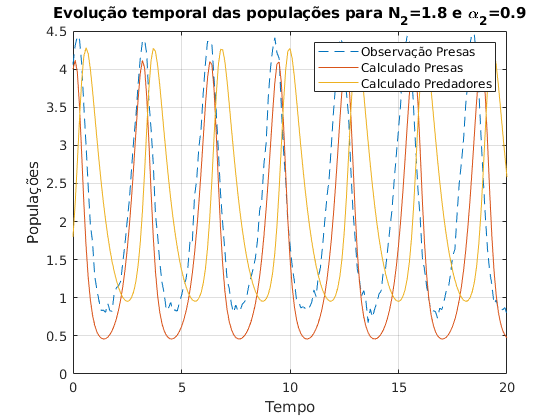 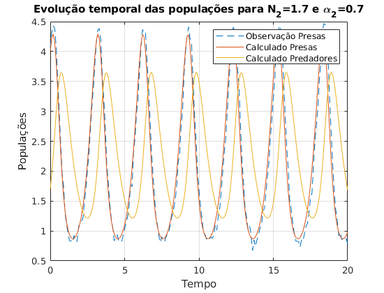 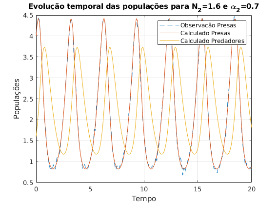
Comentários: Por tentativa e erro os valores simulados vão-se aproximando dos valores reais, pois a diferença entre as curvas simuladas e observadas díminuem
Exercício 2.4 - b)
%Reset do ambiente de trabalho clear; close all; [N2, a2] = meshgrid((1.4:0.01:1.8), (0.5:0.01:0.8)); matrix_size = size(N2); error = zeros(matrix_size); for r = 1:matrix_size(1) for c = 1:matrix_size(2) error(r, c) = populationError([N2(r, c) a2(r, c)]); end end mesh(N2, a2, error); title("Erros para N_2 e \alpha_2 diferentes"); xlabel("N_2 inicial"); ylabel("\alpha_2"); zlabel("Diferença entre simulação e observação"); colorbar; figure; contour(N2, a2, error); title("Erros para N_2 e \alpha_2 diferentes"); xlabel('N_2 inicial'); ylabel('\alpha_2'); zlabel('Diferença entre simulação e observação'); colorbar;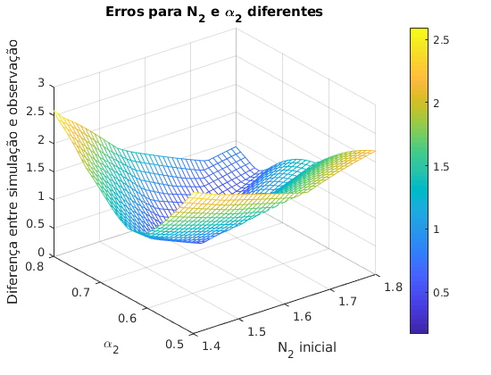 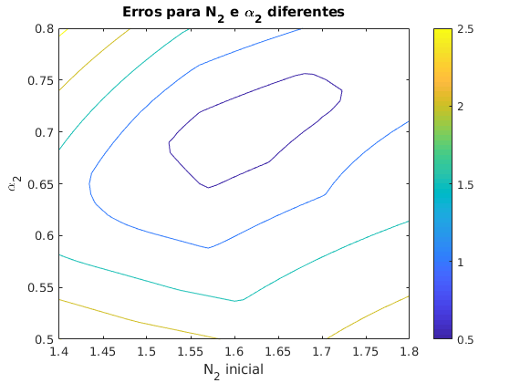
Comentários: Observa-se erro mínimo para 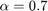 e 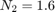. É de notar que nas procuras de optimização de duas variáveis mesmo com intervalos de procura reduzidos é um problema de complexidade elevada.
Exercício 2.4 - c)
%Reset do ambiente de trabalho clear; close all; %Condições iniciais de pesquisa N2 = [ 1 10 25]; a2 = [ 0.5 2 10]; for n = 1:length(N2) inicial_v = [N2(n), a2(n)]; [min_error, error] = fminsearch(@populationError, inicial_v); if n == 1 fprintf("Solução (erro=%f) (mínimo): N2=%f e a2=%f\n", error, min_error(1), min_error(2)); N2_ideal = min_error(1); a2_ideal = min_error(2); else fprintf("Outra solução (erro=%f) (mínimo local): N2=%f e a2=%f\n", error, min_error(1), min_error(2)); end end
Solução (erro=0.155782) (mínimo): N2=1.614380 e a2=0.704668 Outra solução (erro=4.401172) (mínimo local): N2=6.639697 e a2=2.389940 Outra solução (erro=4.469451) (mínimo local): N2=26.860590 e a2=10.210792
Comentários: Com o uso da função fminsearch pode-se cálcular o mínimo muito mais rápido podendo também achar-se mínimos locais dadas condições iniciais diferentes das que aproximam o erro mínimo.
Exercício 2.4 - d)
load("presas.mat"); N1 = 4; d1 = 3.1; a1 = 1.4; N2 = N2_ideal; d2 = -1.5; a2 = a2_ideal; sim("population", tr); plot(tr, N1out, "-", "DisplayName", "Valores simulados"); hold on; plot(tr, yr, "o", "DisplayName", "Valores observados"); title("Comparação entre simulação e observação"); xlabel("Tempo"); ylabel("N_1 - Presas"); legend();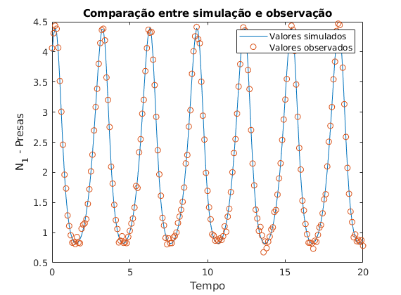
Comentários: Observa-se pelo Gráfico que os valores observados e simulados apresentam pequeno erro entre si, concluindo-se então que a solução mínima obtida está bastante próxima da real.
Parte 3 - Sistema caótico
Exercício 3.2
%Reset do ambiente de trabalho clear; close all; %Tempo de Simulação ttotal = 5; %Condições iniciais m=1; l=0.5; g=9.8; p10 = 0; p20 = 0; %Ângulos iniciais para simular t10_sim = [0.05 0.2 0.3 0.4]; t20_sim = [0.05 0.2 0.3 0.4]; for n = 1:length(t10_sim) t10 = t10_sim(n); t20 = t20_sim(n); sim("pendulum"); figure; plot(t1, t2); grid on; axis square; title(sprintf("Curva de Lissajous para \\theta_1(0)=%.2f e \\theta_2(0)=%.2f", t10, t20)); xlabel("\theta_1"); ylabel("\theta_2"); end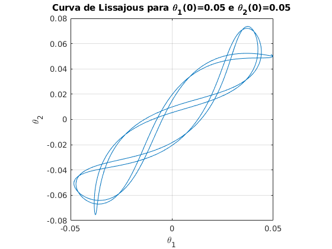 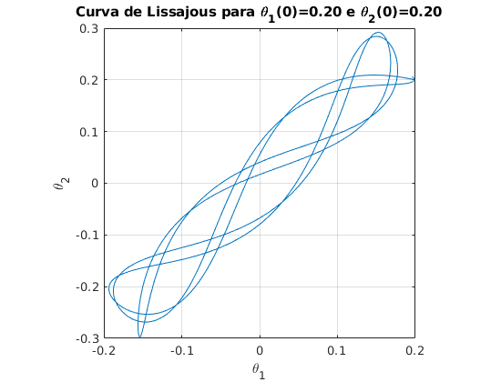 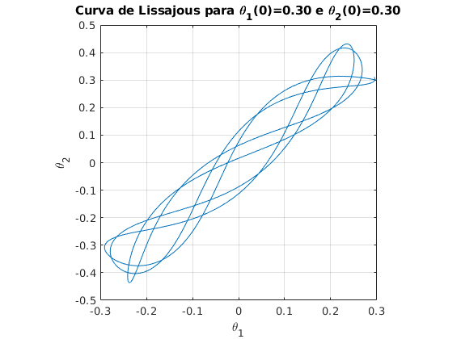 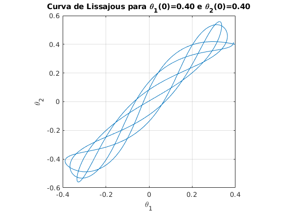
Comentários: Observa-se que ao aumentar os valores dos ângulos iniciais verifica-se que se obtém uma curva de Lissajous cada vez mais irregular, com um período de repetição maior.
Exercício 3.4.1
%Reset do ambiente de trabalho clear; close all; %Tempo de cada simulação ttotal = 250; %Condições iniciais m=1; l=0.5; g=9.8; dt10 = deg2rad(0); dt20 = deg2rad(-30); %Matriz de pontos iniciais da ponta do pêndulo [x, y] = meshgrid((-2*l:0.1:2*l), (-2*l:0.1:2*l)); matrix_size = size(x); %Matriz dos tempos finais iniciado a NaN tfinal = NaN(matrix_size); for r = 1:matrix_size(1) for c = 1:matrix_size(2) %Para cada valor da matriz %Calcula-se os angulos iniciais t0_calc = t0Calc([x(r, c), y(r, c)]); t10 = t0_calc(1); t20 = t0_calc(2); %Caso seja uma posição possível if ~isnan(t10) && ~isnan(t20) %Calcula-se os p iniciais p0_calc = p0Calc([dt10, dt20, t10, t20]); p10 = p0_calc(1); p20 = p0_calc(2); %Simula-se sim("pendulum"); %Encontra o primeiro valor de t1 que seja maior em módulo que pi tf1 = find(abs(t1) > pi, 1); %Encontra o primeiro valor de t2 que seja maior em módulo que pi tf2 = find(abs(t2) > pi, 1); %Cálcula o tempo de looping final como o menor entre os tempos dos dois angulos if ~isempty(tf1) && ~isempty(tf2) tfinal(r, c) = log(tout(min(tf1, tf2))); elseif ~isempty(tf1) tfinal(r, c) = log(tout(tf1)); elseif ~isempty(tf2) tfinal(r, c) = log(tout(tf2)); end end end end s = pcolor(x, y, tfinal); c = colorbar; c.Label.String = "log(tempo looping)"; title("Tempo looping consoate posição inicial"); xlabel("x [m]"); ylabel("y [m]");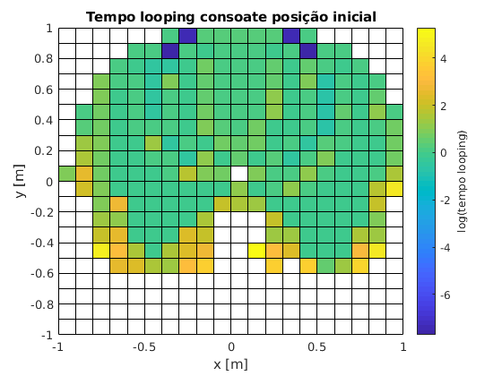
Comentários: Observa-se os espaços a branco da grelha apresentada correspondem às posições iniciais que impossíveis ou que não chegam a fazer um looping no tempo simulado. Em geral podemos verificar que quanto maior for o y da posição inicial mais rápido o pêndulo faz o primeiro looping. Isto deve-se ao facto de quanto maior y, maior a altura, logo maior a energia potencial. Podemos também verificar a existência de um buraco de espaços brancos localizados a volta de x = 0 e y < 0 que nunca chegam a fazer um loop o que vai de acordo ao esperado pois não nessas posições o pêndulo não tem energia potencial suficiente para o fazer.
Exercício 3.4.2
%Reset do ambiente de trabalho clear; close all; %Tempo de cada simulação ttotal = 250; %Condições iniciais m=1; l=0.5; g=9.8; dt10 = deg2rad(0); dt20 = deg2rad(-30); %Intervalos de tempo tlim = [0, 30, 100, 250]; %Posições iniciais para simular x = [-0.9, 0.8, 0.1]; y = [0.1, -0.5, -0.5]; for n = 1:length(x) %Cálculo dos ângulos iniciais t0_calc = t0Calc([x(n), y(n)]); t10 = t0_calc(1); t20 = t0_calc(2); %Cálculo dos p iniciais p0_calc = p0Calc([dt10, dt20, t10, t20]); p10 = p0_calc(1); p20 = p0_calc(2); %Simulação do pêndulo sim("pendulum"); figure; plot(tout, t2); grid on; %Linha de referência pi pi_line = refline([0 pi]); pi_line.Color = "r"; %Linha de referência -pi npi_line = refline([0 -pi]); npi_line.Color = [0, 0.5, 0]; %Limitação de x aos intervalos de tempo xlim([tlim(n) tlim(n+1)]); title(sprintf("Evolução temporal de \\theta_2 para x=%.1f e y=%.1f", x(n), y(n))); xlabel("Tempo [s]"); ylabel(sprintf("\\theta_2 total [rad]")); %Encontra o primeiro valor de t1 que seja maior em módulo que pi tf1 = find(abs(t1) > pi, 1); %Encontra o primeiro valor de t2 que seja maior em módulo que pi tf2 = find(abs(t2) > pi, 1); %Cálcula o tempo de looping final como o menor entre os tempos dos dois angulos if ~isempty(tf1) && ~isempty(tf2) tf= tout(min(tf1, tf2)); elseif ~isempty(tf1) tf = tout(tf1); elseif ~isempty(tf2) tf = tout(tf2); end fprintf("Instante em que ocorre looping para x=%.1f e y=%.1f: %f s\n", x(n), y(n), tf); line([tf tf], get(gca, 'ylim'), "Color", "m"); legend(sprintf("\\theta_2"), ... sprintf("\\pi"), ... sprintf("-\\pi"), ... sprintf("tempo loop"), ... "Location", "eastoutside" ... ); end
Instante em que ocorre looping para x=-0.9 e y=0.1: 4.991128 s Instante em que ocorre looping para x=0.8 e y=-0.5: 90.746065 s Instante em que ocorre looping para x=0.1 e y=-0.5: 239.269728 s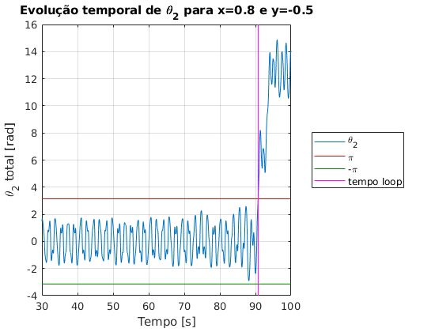 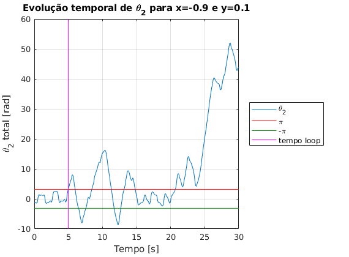 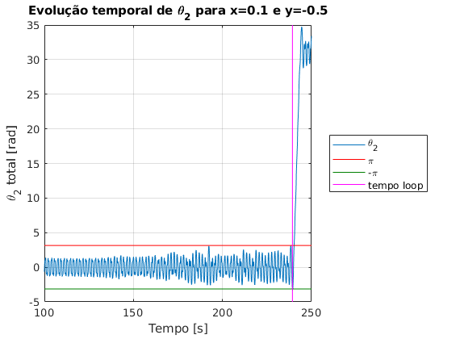
Comentários: Observa-se que os valores do 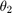 simulados não estão contidos somente no intervalo 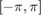 pois não representam o teórico mas sim o andamento do mesmo ao longo do tempo, como se pode verificar no exemplo do Gráfico 3 em que existe um loop vindo do lado de 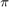 no qual o 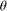 não passa para 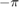 mas continua a acumular no mesmo sentido. Existem casos onde este método de cálculo do tempo de looping falha pois graças à interação entre os pêndulos o ultrapassa ou apenas momentaneamente retornando ao sentido anterior.